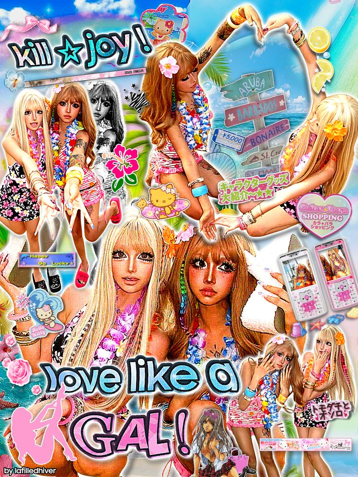
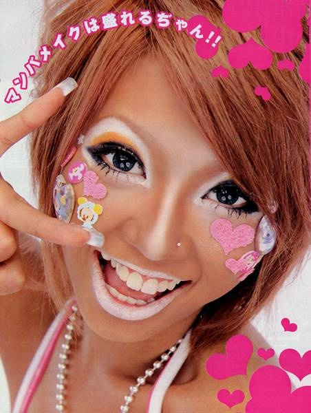
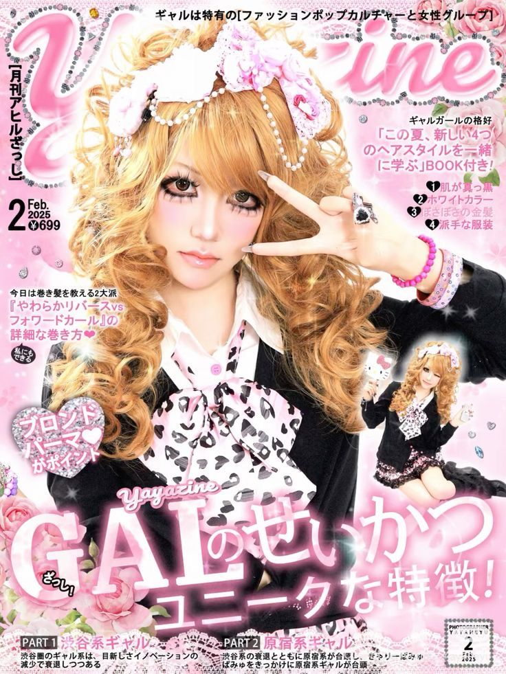
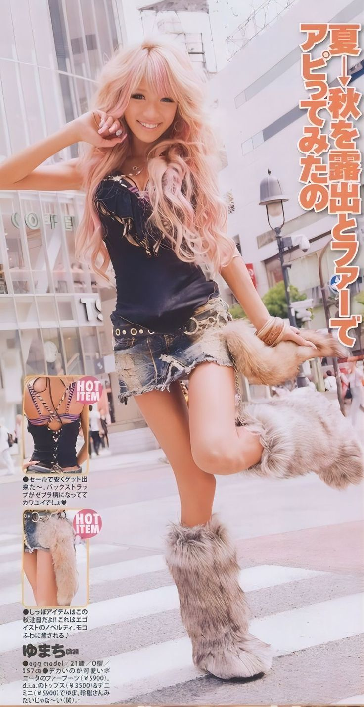
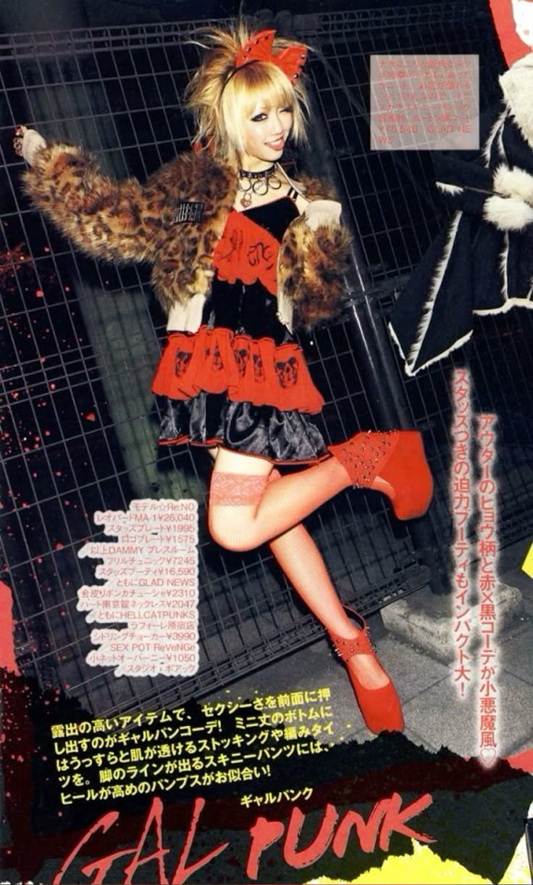

Gyaru is a Japanese fashion subculture that emerged in the 1990s as a reaction against the minimalist aesthetic of the time. It challenged the conservative beauty standards of Japan and later developed into several distinct substyles.

Gyaru is a Japanese fashion subculture that emerged in the 1990s as a reaction against the minimalist aesthetic of the time. It challenged the conservative beauty standards of Japan and later developed into several distinct substyles.

The word Gyaru is a transliteration of the word 'Gal'.
Ganguro is a broad style of gyaru. This is considered one of the first Gyaru substyles. The term 'Ganguro' is more often used as a broader term for the styles of gyaru which feature white makeup and dark tans.


Hime gyaru (not to be mistaken for Lolita style) is also regarded as "princess gal". It focuses on being cute and dolly, creating the 'princess' element of the style.
Tsuyome is a broad term to describe a strong, tough look. Tsuyome, in Gyaru, is an incredibly popular substyle. It is essentially a strong, bold and sexy substyle.


Rokku, or Rock, is a substyle that comes from the clothing that Rokku Kei bangyas wear. The style is heavily influenced by the music scene, but the style is not restrictive and is quite open to interpretation.